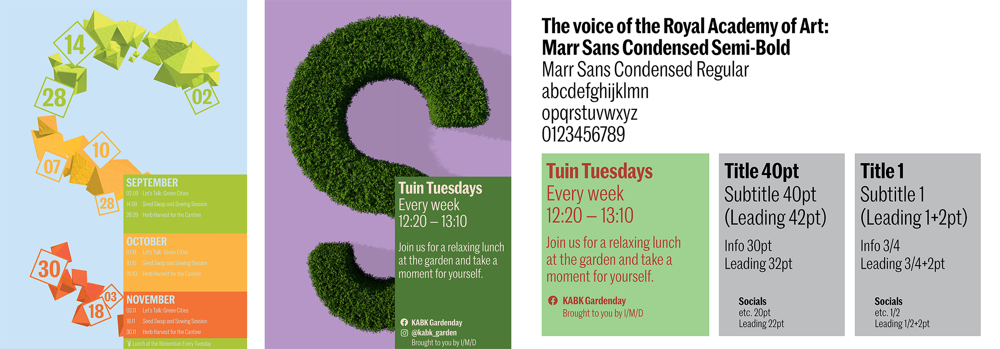
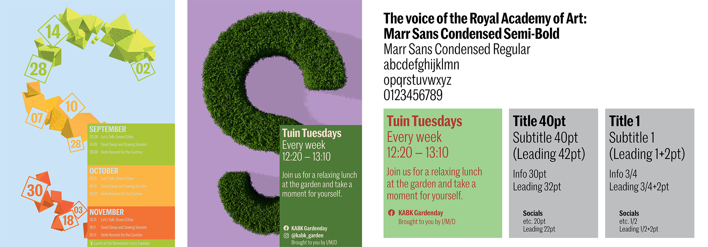

in situ is a digital feature that allows users to combat loneliness and
find their real life communities, even in difficult circumstances.
in situ offers flexibility and convenience, without profiles, chats or infringing privacy.
Individual connections with a collective focus.
Conversation prompts submitted by participants help break the ice and
reflect the subjects most talked about at that specific location.
This data can be used to filter searches by interests.

In a light and humorous tone, the website Dwellers of the Memory Palace
invites the participant to rediscover their domestic space by
engaging with it through a series of uplifting self-reflections.
Quirky routine modifications, embodiment and multi-sensory triggers
build a real-life memory palace for guidance and meditation, finding
metaphors, poetry and advice in our everyday actions.
Thesis project for Graphic Design BA at the Royal Academy of Art, The Hague (KABK).
🔗 Project website
🔗 Project trailer
🔗 Process documentation
🔗 Thesis site
🔗 Thesis digital publication
🔗 Thesis trailer
In my thesis, I explore the existing hierarchy of the senses and grapple with
the new possibilities offered by interactive and immersive technologies, particularly for their applications in branding.
I also ponder my role as a hybrid designer in the future of design as I see it.


Window sticker and city-wide poster campaign for foundation and art center Stroom Den Haag, in celebration of their 30th anniversary and their important role in the cultural life of the city. The campaign slogan is Kijk Vrij (See Freely), as they encourage dialogue and open-mindedness.

Level The Playing Field is a web-based game adapted from a 1975 promotional board game by the Federation of Dutch Trade Unions.
I reworked the linear board game structure and transformed it into an interactive decision tree (made on Twine) that visualises
the ways a worker could find professional success being a union member.
In collaboration with the International Institute of Social History in Amsterdam.
Cover design for Belgian author Lize Spit's second novel titled Ik Ben Er Niet (I'm Not Here), published by Das Mag. My design emulates the story of a young woman who one day realises she no longer recognises her own boyfriend and wonders how their relationship will survive this. Lize Spit's first novel, Het Smelt (The Melting), sold over 200,000 copies, was translated to 12 languages and won various prizes.
An interactive exploration of a counter-occupied apartment in the context of a fictional social movement
in response to the intense touristification of city centers. The exorbitant rents force
the locals to move out, resulting in cities that resemble tourist theme parks.
In my movement, people would “occupy” tourist rentals and start paying reasonable long-term rent,
and actively engage in the community again.
You can discover the story of the movement through the objects spread throughout the rooms.
🔗 Project

An identity for a techy community garden with a focus on sustainability and permaculture, built & run by the Interactive Media Design BA and volunteers at the KABK. They grow food and medicinal herbs, install sensors to monitor the plants, organise events and promote well-being by opening the use of this space to everyone.


 

A video combining 3D animations and found footage that criticises Wikileaks
for recklessly exposing the personal information of millions of vulnerable Turkish women
during the 2016 post-coup d’état authoritarian crackdown. Contrasting symbolic illustration and found footage,
it calls for us to re-think who has access to our personal data online.
Warning: some violent footage

Informative wooden panels that showcase and explain different quilt patterns that were part of the history of the Underground Railroad (in American history, a network of secret routes and safe houses by which slaves could escape to freedom). The patterns have their own meanings and were meant to be warnings and indications to those slaves on the run.

A series of looping 3D-animated posters as part of an identity for an imaginary set of screenings/ lectures. They're based on Johnny Harris' documentaries, in which he collects stories and provides context for social and geo-political issues at frontiers all around the planet.
A packaged set of four booklets focused on colour and photography.
Narratives written by me with the same statement as a starting point:
“A journey is just a change in perspective.”
I experiment with alternative ways to interact with and experience a book.
Colouring Landscapes includes hidden photos that are only revealed with backlight illumination.
Colour Archive uses japanese binding to create the illusion that content flows over the edge of the page.
The Wee Ours is a photo reportage in which I evoke the feeling of wonder and limbo in a city still asleep.

In these pages, two different texts and empty image frames are layed out to look like the map of a city;
ruins of houses, temples, palaces seen from above.
I combine only the captions of an illustrated text on Assyro-Babylonian Mythology with
articles on the destruction of Babylonian archeological sites by ISIS and
on new advancements made in the (digital) documentation and conservation of the sites.
This was published as part of a collaborative book.
Spheres of influence is an alternative data visualisation of my own Spotify statistics and what they reflect about me as a person and listener. I sorted the data searching for trends and outliers that told stories.